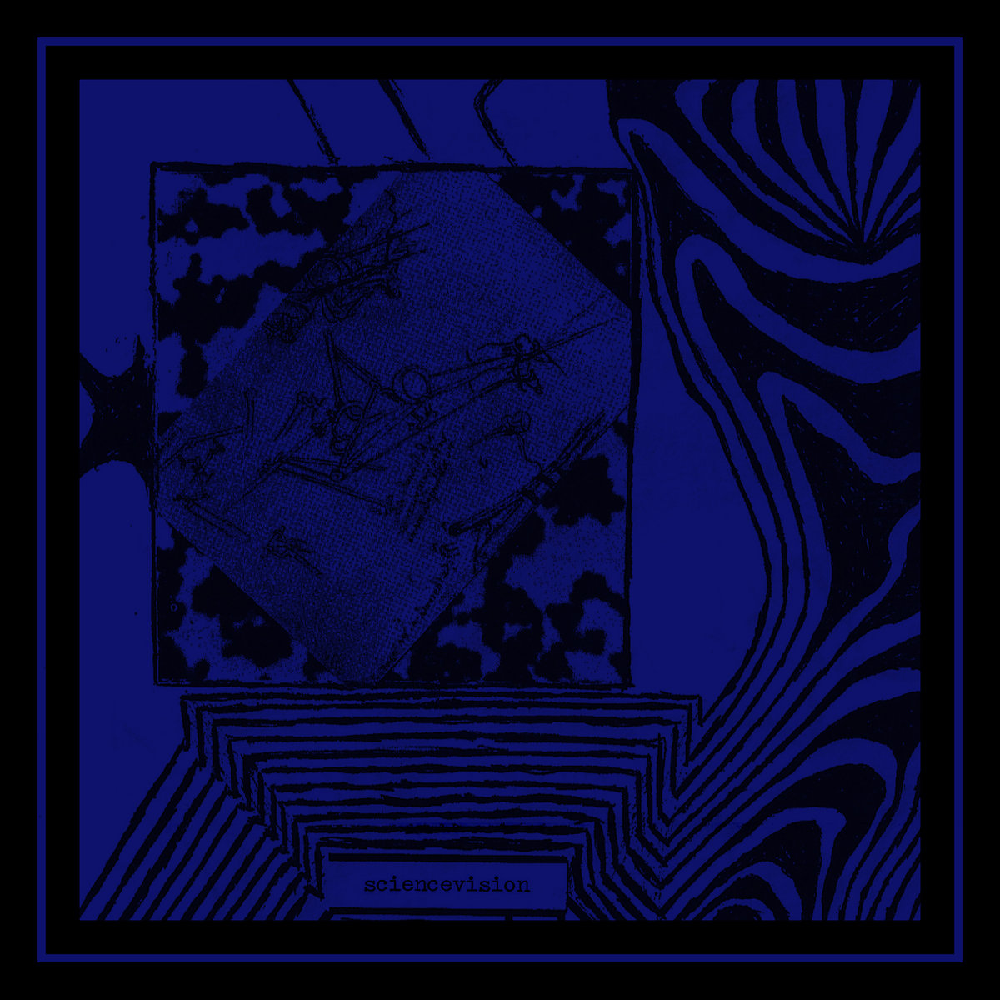

sciencevision - what we found
catalog: ar-011
year: 2021
format: cassette
Collection of remastered recordings taken from previous Sciencevision releases between 2014-2016 and fashioned into a new album. Empty room psychedelia from the muted corners of Indiana, Pennsylvania. Edition of 15.
1. heavy stone
2. moment stretched across space
3. where i lived in a nightmare
4. everything under the same stars
5. a transition
6. outspace
7. the streets under the same lights
8. merlot (wine jam)
2. moment stretched across space
3. where i lived in a nightmare
4. everything under the same stars
5. a transition
6. outspace
7. the streets under the same lights
8. merlot (wine jam)
*** cassette available on bandcamp ***